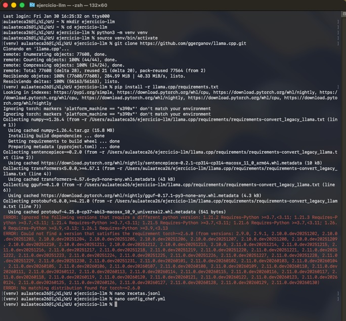
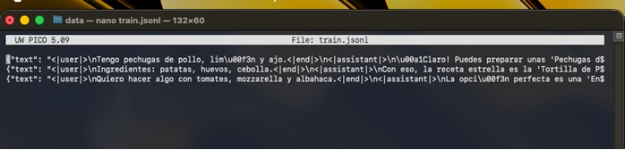
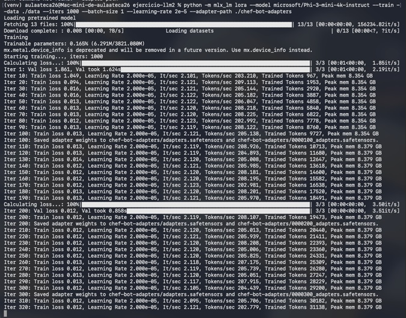
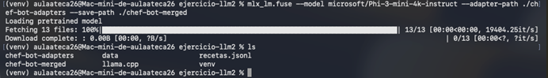
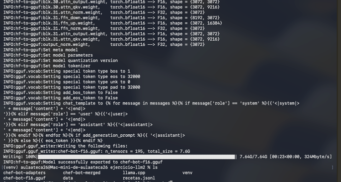

01. Configuraciones Iniciales
Ajustes base del sistema y selección del modelo Phi-3-mini-4k-instruct como punto de partida.

↑ Volver al inicio
02. Archivo de Entrenamiento
Visualización del conjunto de datos procesado para el aprendizaje del bot gastronómico.

↑ Volver al inicio
03. Comando de Entrenamiento
Iniciando el proceso de LoRA con MLX a 1000 iteraciones.
python -m mlx_lm lora --model microsoft/Phi-3-mini-4k-instruct --train --data ./data --iters 1000 --batch-size 1 --learning-rate 2e-5 --adapter-path ./chef-bot-adapters

↑ Volver al inicio
04. Fusión del Modelo (Merge)
Integración de los pesos entrenados (adapters) con el modelo base original.

↑ Volver al inicio
05. Conversión a GGUF
Transformación del modelo a un formato eficiente para ejecución en hardware local.
python llama.cpp/convert_hf_to_gguf.py ./chef-bot-merged --outfile chef-bot-f16.gguf --outtype f16

↑ Volver al inicio
06. Prueba Final
Validación de resultados: El Chef-Bot respondiendo consultas culinarias con éxito.